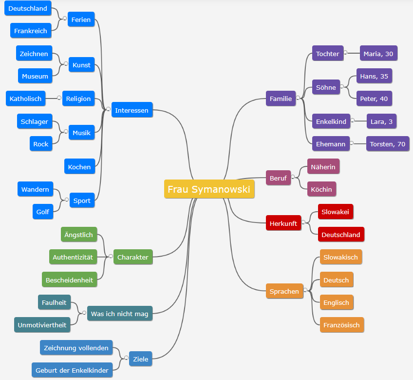
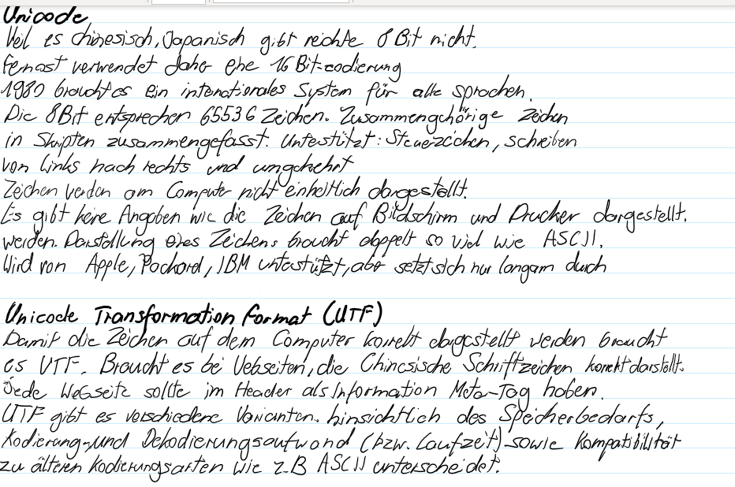
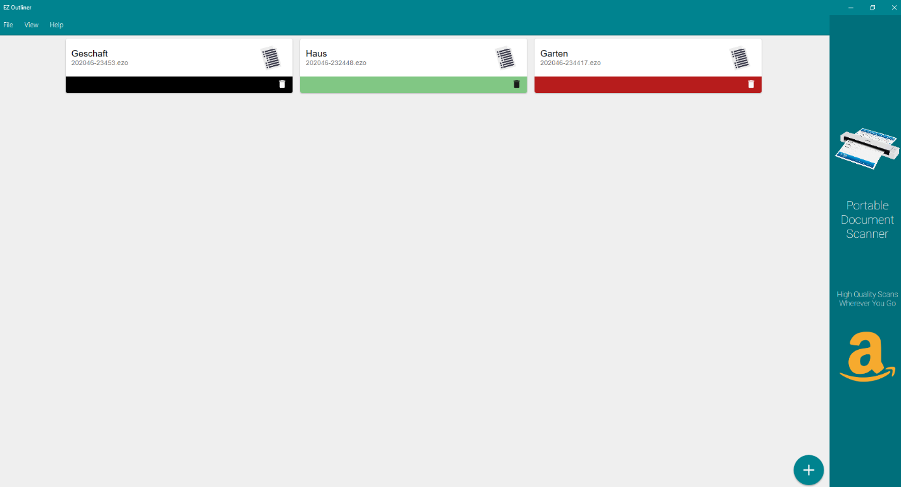

Arten zum Informationen strukturieren
Mind Map
Mit dieser Variante können Informationen einfach strukturiert werden. Es kann mit Stichwörtern gearbeitet und diese können dann miteinander verknüpft werden. Die Mindmap ist übersichtlich und klar, da die Stichwörter über Äste miteinander verbunden sind. Diese beansprucht auch nicht so viel Zeit wie andere Varianten.
Ein Beispiel für eine Mindmap ist, die wichtigsten Informationen über eine Person zu strukturieren:

Zusammenfassung
Die wichtigen Informationen werden notiert und so behält man eine gewisse Struktur und wird nicht von den ganzen Information überfordert.
Ein persönliches Beispiel ist die Zusammenfassung, bei der ich versuchte, das Wichtigste aus einem Buch mit wenigen Worten zusammen zu fassen.

Notizen
Es wird nur das Wichtigste aufgeschrieben und dadurch entfallen belanglose Informationen.
Für ein Buch, das wir im Moment für den «allgemein Bildenden Unterricht» lesen, habe ich mir Notizen von den verschiedenen Personen gemacht, die im Buch vorkommen. Ansonsten sind das zu viele Informationen und ich könnte deren Charakteren nicht mehr zuordnen.

Welche Art ich bevorzuge
Eine beste Methode gibt es für mich nicht. Es ist immer abhängig davon, wie viele Informationen ich habe bzw. bekomme. Sobald ich sehr viele Informationen erhalte, verwende ich am liebsten eine Zusammenfassung, da ich trotzdem relativ viele Informationen aufschreiben kann. Hingegen bei einem Buch, ziehe ich Notizen den anderen Methoden vor, da meistens viele Informationen schnell kurzgefasst werden können.
Wenn ich mich entscheiden müsste, würde ich die Zusammenfassung wählen, da auch Skizzen oder Sonstiges gezeichnet werden können, um die Informationen zu verdeutlichen, oder hervorzuheben.
Hilfsmittel zum Informationen strukturieren
Im Microsoft Store habe ich die App EZ Outliner gefunden. Sie bietet einen guten Überblick der gemachten Notizen und es können sogar Farben ausgewählt werden. Innerhalb dieser App sieht es dann doch etwas anders aus. Es ist nicht möglich eine Farbe auszuwählen, da dies kostet. Es können Unterverzeichnisse erstellen werden, was ich gut finde. Der Aufbau sieht sehr gut aus und sie ist übersichtlich. Die unteren Kapitel können auch eingeklappt werden, aber es ist auch möglich, viel mehr Text zu schreiben. Um eine Mindmap zu erstellen ist diese App nicht geeignet, sondern nur für Notizen, oder auch wenn man viel Text hat. Das Hinzufügen von einem neuen Verzeichnis ist einfach. Es gibt nicht sehr viele Einstellungen, um etwas zu ändern, deshalb muss man sich mit dem zufrieden geben, was vorgegeben wird. Die Verzeichnisse können auf einfache Art verschoben werden. Leider wird auch Werbung angezeigt und ich denke es gibt bessere Tools, um seine Informationen zu strukturieren.
